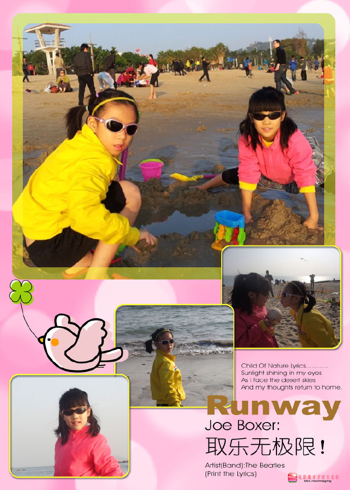
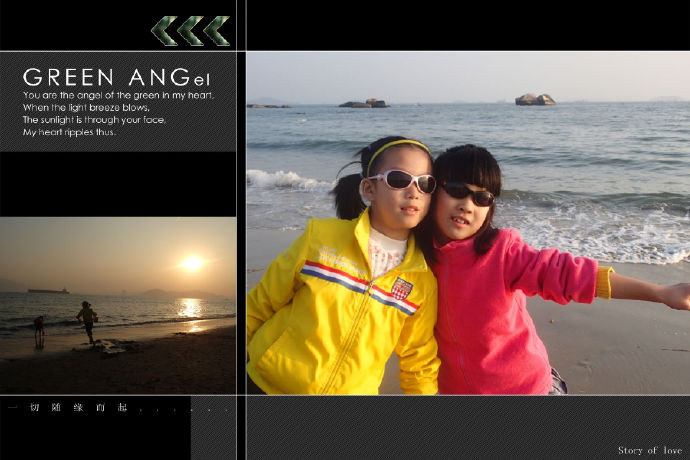
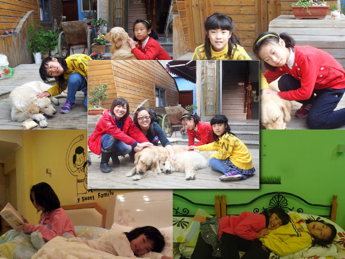
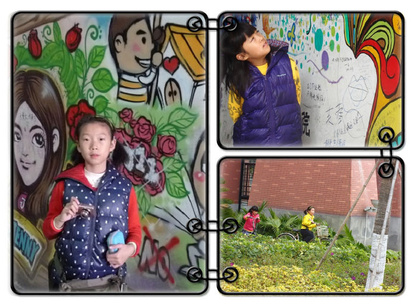
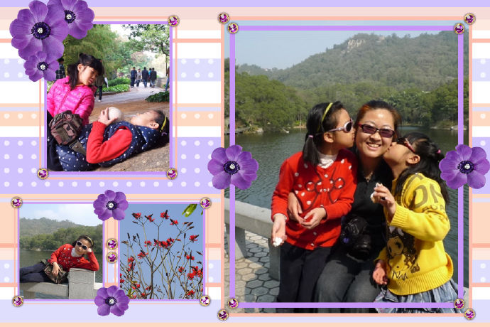
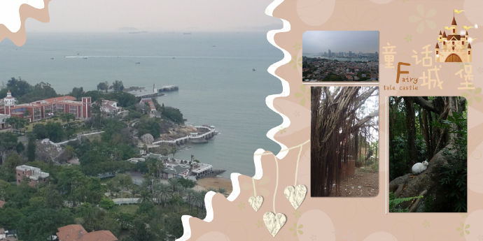
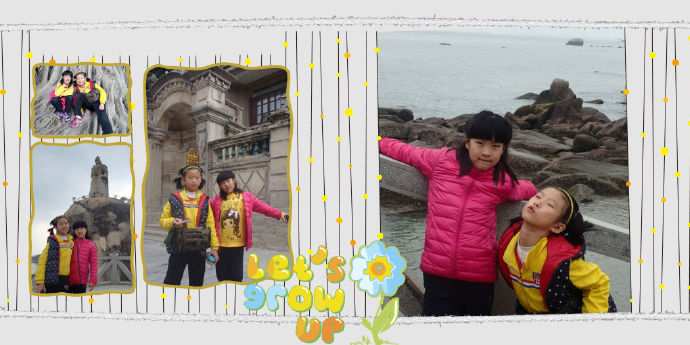
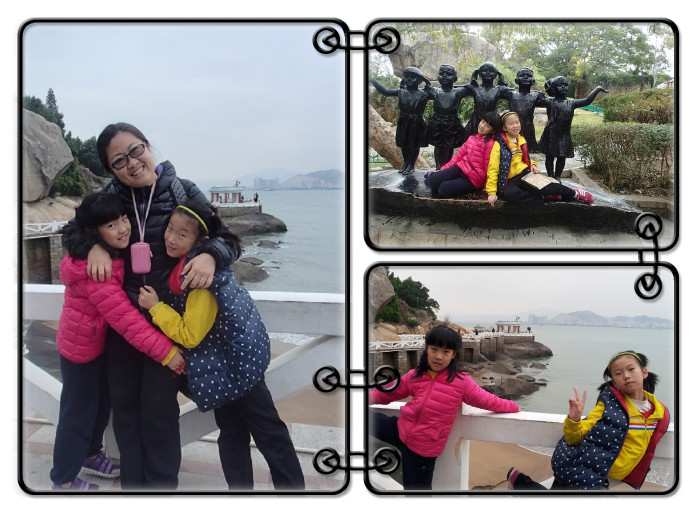
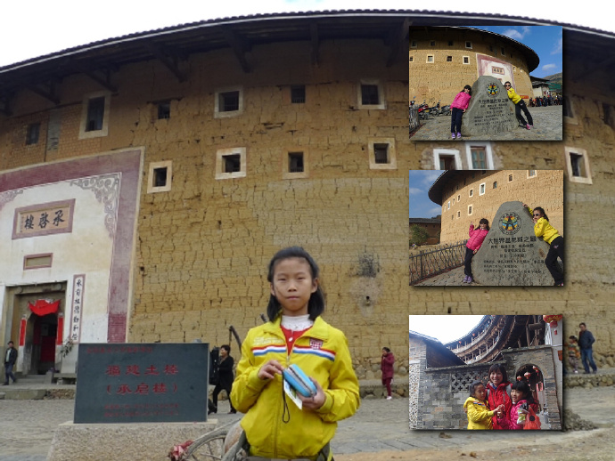
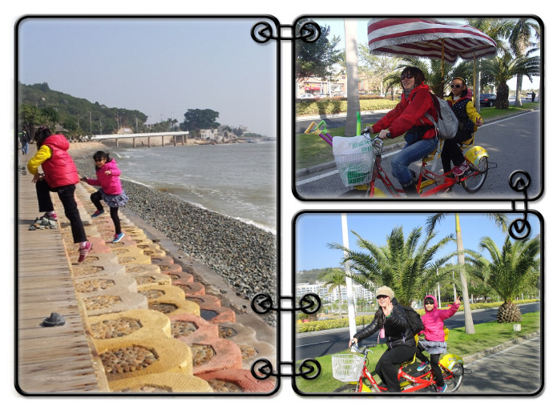

第一天：坐飞机到厦门，到旅馆安顿下来，直奔海边。同行的是曼曼的同班好友——好雨。厦门的旅馆是爱吾吉屋家庭旅馆，就在厦大旁边，到海边步行需要10分钟左右，生活十分便利，厦大门口天天有夜市，我们每天的晚餐都是在这里解决的。旅馆旁边还有一个早餐点，每天早上有十分丰盛的早餐。旅馆里有两只大狗——巴蒂和甜甜，给两个孩子的生活增添了很多乐趣。

海浪和沙滩是每个孩子心中永远不会厌倦的主题


温馨的家庭旅馆，忘不了旅馆淳朴的大叔像家人一样的笑语，忘不了巴蒂和甜甜，忘不了每晚伴我们入睡的好雨妈妈的朗诵——鼓浪屿上看房子。
第二天：旅馆就在厦大旁边，所以厦门大学成了旅行的第一站。我们从旅馆借了几辆自行车，穿过著名的芙蓉隧道，来到号称中国最美丽的校园。也许期望值有些太高，觉得说它是中国之最有点名不符实，但是校园确实还是很美的，特别是情人谷。午餐选在著名的“芙蓉餐厅”，味道真不错。只是两个小家伙太没有尝试新鲜事物的勇气了，海蛎煎、土笋冻之类的海鲜，只要以前没吃过的，皱着眉头尝都不愿意尝。从厦大校园出来，又是海边，于是又到了夕阳西下。


第三天：鼓浪屿。晚上到中山路吃小吃。



第四天：永定土楼

第五天：环海骑行，体验最美的马拉松赛道，下午航班回北京
